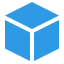
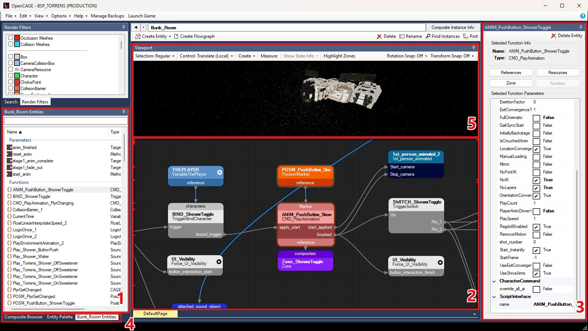
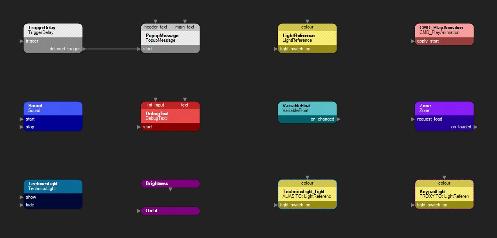
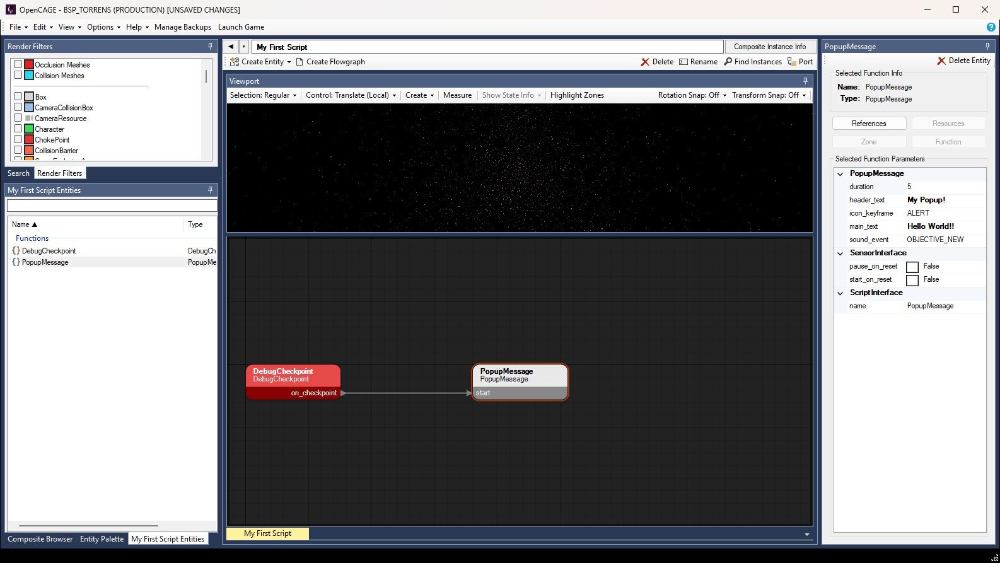
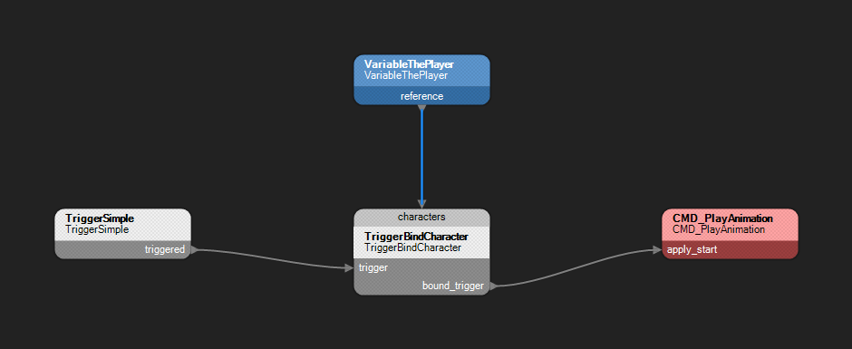
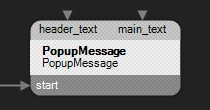
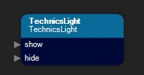
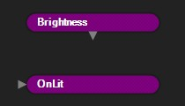
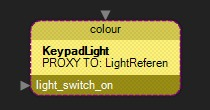
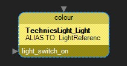

Alien: Isolation is built using a custom engine named Cathode, which utilises a custom node-based scripting system. This scripting system is used to power the entirety of a level - scripts not only define things like cutscenes, characters, mission objectives, interactables and triggers, but also define model placements, sound emitters, particle effects and more to build up a level’s visuals.
Cathode scripts would have been created and modified using a toolkit known as CAGE (the Creative Assembly Game Editor). While CAGE was never released to the public, the open-source community-driven project OpenCAGE contains an ever-growing feature set, which includes support for creating and modifying Cathode scripts!
The fundamentals of the Cathode scripting system are pretty straight forward and will be familiar to you if you've used any node-based scripting system before, such as Blueprint in Unreal Engine. Let’s go over all the terminology and explain the core concepts!
Cathode scripts are created inside containers called "composites". Within a composite there are "entities" which define logic; this logic can do invisible things like updating objectives when a player enters a trigger, or visible things like place and animate models.
A composite should generally hold either a collection of like-minded things (for example; a sub-section of a level to split it up from the wider level, like a room), or something that will be re-used a lot of times (for example; something like a push button, which would always need to contain an interactable trigger, model, animation, and some other scripting logic that you wouldn't want to have to re-make every time you need one). The former is just generally a way of keeping things easy to find and tidy, and the latter is just good practice to speed up level creation.
If you've used Unreal Engine before, this concept should seem very familiar to you: composites are essentially just Blueprints. Similarly if you've used Unity before, composites are kinda similar to Prefabs, just remember that they implicitly contain scripting logic within them. If you'd like to learn more about the fundamental concepts behind this workflow, I'd recommend checking out some Unreal Blueprint tutorials!
Lets go over the different types of composite you’ll come across within the script editor.
Every level has a "root" composite which is shown in OpenCAGE by an orange globe icon. The root composite is what is executed when the level is loaded in-game, so if you have nothing in there, your level will be blank! You may look at a level's root composite and be confused that there are only a few entities within it; this is because composites can be "instanced" within other composites.
A typical campaign level of Alien: Isolation is defined by two composites that are instanced inside the root composite, named "MISSIONS" and "ENVIRONMENT". The former contains composites that script the level's missions, and the latter contains composites that populate the level with models and effects. It's worth noting that this isn't a requirement you need to follow, but merely a convention that the developers followed to keep things tidy when navigating scripts. For example – it’s easier to modify a mission script if it’s contained in a nicely named composite within a “missions” composite, rather than being dumped somewhere with a load of model definitions for the environment: we’ll go over all the various Entity types in the next section, so this may become clearer to you then.
As well as the root composite, there are two other composites which are loaded when our level starts up. These composites are the same across all levels, and would likely have been modified across all levels at the same time by CAGE. They’re kinda core-game logic rather than level-specific logic, and it’s probably best to leave them alone – regardless, let’s explain what they are.
The “PAUSEMENU” composite is used to perform logic while the game is paused. It contains definitions for blurring and distorting the camera in the way that you see behind the pause menu UI.
The “GLOBAL” composite is used to track progression and persistent game state across levels. It can be used to get and set information such as mission number, map, and other metadata that allows you to change things based on wider mission progression. For example: if a player enters a level and their GLOBAL mission number is a number that you have a mission script for, you’ll want to execute that mission script. Within the base game, you’ll see references to “AMB” scripts: these are the ambient mission scripts that are executed when a player enters a level on a mission number that doesn’t have a matching mission script. You can typically see the logic to do this within the level’s “MISSIONS” composite referenced off of the root.
"DisplayModel" composites are special in that they are used to define "display models” which can be used when spawning “Character” entities. A DisplayModel composite's name must begin with "DisplayModel:". The rest of the composite name is then used as the name of the display model that can be referenced elsewhere. For example, you may see “DisplayModel:ALIEN” in your level – this is the display model “ALIEN” for the Xenomorph Character entity.
Typically DisplayModel composites contain a series of ModelReference entities to define character body parts, and one EnvironmentModelReference entity which defines the environment animation resource to map all the models to an animatable skeleton.
It’s important to note that display models are purely model/skeleton data. They are not the actual NPCs. For example, when on a level containing the “ALIEN” display model, you’ll see that the actual Character of the Xenomorph is defined within “ARCHETYPES/NPCS/ALIEN/XENOMORPH_NPC”. That composite contains all of the Xeno’s FX, events, spawning logic, and other Character information passed along to the “NPC_LOGIC” composite instance, which then creates the actual Character entity.
NOTE: Work is still continuing on allowing modification of the environment animation resources, so for now you can only select ones that already exist in the level.

Regular CompositesWe’re all done with the special composite types – the only other composites you’ll come across are just regular composites. Realistically every composite under the hood is actually just a “regular composite”, some are just handled differently by the engine (e.g. DisplayModels).
As mentioned, composites can contain a variety of entities, and can be instanced within eachother to build up reusable and complex logic. Let’s move on to talk about entities to make this clearer.
Within composites, “entities” can be created with "parameters" to define logic. These parameters can either be defined on the entity itself, or can be “linked” to another entity. Linking a parameter to another entity does one of two things; it either shares data from one entity to another (e.g. you may want a Boolean parameter (true/false) to be set by the result of another entity’s action), or acts as a trigger to execute our entity after the action of another (e.g. you may want to trigger logic sequentially during a scripted sequence, and activate entities linearly).
There are five major types of entity available to create within OpenCAGE, each marked with a unique icon.
Function entities are the most important entity to build up our logic and levels. Each one performs a certain action and can be given parameters to modify the outcomes. For example, you can use a ModelReference entity with a "resource" parameter pointing at a model and material to place a renderable instance within a level at a "position" (also defined by another parameter).
There are hundreds of function entities available to use, ranging from simple mathematical logic to more complex tasks like setting objectives and playing sounds. A full list of function entities and their parameters can be found here!
For programmers: think of function entities as literally executing methods in code - the parameters you give them are just method arguments. For Unreal Engine developers, again this concept should seem very familiar to you with standard Blueprint nodes.
It’s worth highlighting that there are two function entities which perform special additional logic that requires an additional editor window: “CAGEAnimation” entities and “TriggerSequence” entities. CAGEAnimation entities are special scripted sequences which contain a timeline and can modify parameters and activate triggers over a specified time period using keyframes and animation curves. TriggerSequence entities define a collection of references to other entities with a specified delay between each reference, this can then be used for a variety of things such as referencing a collection of entities for use in something like a “Zone”, or for triggering a parameter on those entities with a delay (for example, triggering a sequence of “LightReference” entities to turn on 1 second apart).
You may now be asking – what is a Zone? Cathode utilises something known as “level streaming”, which is a way of loading chunks of a level at runtime, rather than loading the entire thing at once. Zone entities are the key to this level streaming system – each Zone defines a collection of entities within it (typically “ModelReference” entities) which are then rendered/loaded when the Zone is active, and not when it’s inactive. This system is key to keeping memory overheads down in larger levels.
There are a variety of other specifics to dive into for other function entity types as you may expect, since they all perform bespoke logic that can have its own edge cases. The OpenCAGE docs don’t currently go into each and every function type as there are hundreds to cover, so recommended practice is to infer for yourself. Typically the names are pretty self explanatory – that, tied with reading and understanding the list of available parameters should probably be enough to get the function’s purpose. You can additionally switch the Search panel to Function Entities and pick a function type to list every entity of that type in the level, which should give you good context surrounding the usage and setup of each. Don’t forget as well, the OpenCAGE Discord is always on hand to help!
Composite instance entities do exactly what you'd expect them to: instance a composite! Under the hood they're just function entities, however instead of allowing you to execute a pre-defined function within the game engine, they allow you to execute functionality you have defined within another composite.
These entities are super useful to allow your composites to become re-usable building blocks across your level; for example, if you have a model with a particle system and sound effect that you want to place a lot of times, you can simply create a composite for that and instance it in your level over and over, instead of manually re-creating that same configuration over and over. Best of all, doing that will mean that you can then update every instance at once, as modifying the composite will modify every instance at once.
A parameter entity is used to create an interface for the composite which is exposed when instancing it via a composite instance entity. This adds additional usefulness to your composites as you can build them around parameters and events which change their content and activate additional external logic after actions within your composite, just like building a function when coding.
Let’s explain with an example: I make a composite that displays an objective, then waits five seconds. I want to instance that composite to re-use that logic, but I don’t want the same objective to pop up every time, and I also want to know when the five seconds are up to trigger additional logic elsewhere. I could make two parameter entities: one which is an “Input String” type that connects to a SetPrimaryObjective entity to set the objective text, and one that is a “Target” type which connects from the LogicDelay entity’s event for finishing. These two parameter entities would then be visible and usable on any composite instance entities that instance the composite! I could set the objective text using my string parameter, and trigger other logic using the target parameter – all without ever touching the logic inside.
There are a variety of parameter entity types available covering all datatypes to input/output, as well as some specialised types for handling input triggers (named “Method”), output triggers (named “Target”), and for passing data when the composite instance is referenced (named “Reference”). Check out some existing composites to see them in action.
In the entity list, a parameter's icon shows which kind it is: a dark square with a white arrow, and a red edge on the side where its pin sits on an instance of the composite. The edge is on the left for a Method, the right for a Target, the top for an input (arrow in) or an output (arrow out), and the bottom for a Reference, as in the Parameters group of the interface picture below. The icon beside this heading is only used for a parameter with no recorded type.
Aliases are entities which point to entities within instanced composites within the current composite. Once you've pointed to the nested entity by creating a path to it, the alias then acts as a stand-in for that entity. For this reason, aliases are useful for creating overrides on child entities, or for linking parameters to child entities which are not directly within the current composite.
For a simple example, lets say you create a composite that contains two ModelReference entities with a Sound emitter, and instance it multiple times in your root composite to place it in various places around the level - but in one instance, you just want one of the ModelReferences to be visible. You could create an alias pointing to one of the child ModelReference entities contained within that specific composite instance, and apply a parameter on the alias to delete it. This allows you to continue using the same composite, but have the flexibility for variants.
Proxies are very similar to aliases, except instead of pointing to an entity relative to the current composite, they point to an entity relative to the root composite - giving you a proxy of the instance of an entity within the level as it will be at runtime (as the root composite is the one that is loaded for the level, see above for more info about the root composite). Because of this, proxies are generally used for script-driven things as they have the wider context of the level as it will be during gameplay. They must also be enabled in order to function, and aren't implicitly active like aliases.
As an example of the usage of a proxy, imagine you have a trigger which will be happening inside a composite you're instancing within your environment composite, and you want to know about the trigger within your mission script which is contained within another composite. From the root of the level, you could find the entity with the trigger, create a proxy of it, and then listen to the parameter with the trigger off of the proxy.
As proxies must also be enabled, you could have logic behind if the proxy is active to do things like show/hide ModelReference entities within composites instanced somewhere within the level.
A proxy whose target isn't in the level — because the entity was deleted, or the composite was ported from a level that had it — is kept, and shown as an unresolvable proxy: a node with a ! marker, dark red links, and a Change Target button in the inspector to point it somewhere that exists.
As you can imagine - all of these pointers and cross-references can become hard to track: OpenCAGE contains a few features to try and make this easier. One of those is the References button which you can see after clicking on an entity - this will show you all entities which point to it. The inspector also shows, in orange, any parameter that an alias elsewhere overrides, so you can see on the entity itself when something outside is changing it.
Now you're familiar with the fundamentals of the scripting system, lets take a look at the script editor, and build our first script.
OpenCAGE opens straight into the script editor and asks which level to load: pick one in the Select Level window and press Load. To switch to another level later, pick it from File → Load Level.
Once a level has finished loading, you'll be presented with the following interface:

BSP_TORRENS with the Bunk_Room composite open and ANIM_PushButton_ShowerToggle, a CMD_PlayAnimation, selected in the entity list [1] and on the flowgraph [2]. On the flowgraph, THEPLAYER gives BIND_ShowerToggle the character to bind, and its bound_trigger starts the animation. The inspector [3] lists its parameters, with the ones changed from their defaults in bold.
Along the top are the menu bar (File, Edit, View, Options, Help, Manage Backups and Launch Game, joined by Live Link while the Steam version of the game is running with Live Link) and, above the Viewport and the flowgraph, the composite bar: the back button and its history dropdown (see Reading the Flowgraph), the trail of composites you stepped down through to get here, ending in bold with the one you're in (click an earlier one to go back up to it; just Bunk_Room here, as it was opened on its own), and Composite Instance Info, which shows where the instance you stepped into sits: its position in the level if you stepped down from the root, or relative to the composite you started from if not. Under it, the composite toolbar has Create Entity (a dropdown of the five entity types) and Create Flowgraph for a new page on the left (followed, while Live Link is connected, by Resync and then Show Activity, each set off by a divider; Clear Activity joins Show Activity while it's on, and both stay after a disconnect while links are still lit), and on the right the buttons for the composite itself: Delete, Rename, Find Instances, which lists its instances in the Search panel, and Port, which opens the Port Composites window with this composite ticked.
The other panels share the left-hand side: Search and Render Filters are tabs above the entity list (Render Filters only while the Viewport is on), and the Entity Palette is the middle tab of the bottom strip. Every panel can be dragged and docked wherever you like it. The Entity Palette files every function type in category folders – the same categories that colour the nodes – with the parameter entity types under Composite Interface; a type with no category of its own is filed with the type it inherits from, or under Misc. Its search box matches type names and category names alike. Drag a type onto the flowgraph, or double-click it, to create an entity of it, and a Last Used list underneath keeps the ones you reached for last. A type with a position parameter (a model, a light, a sound, a trigger sequence...) can also be dragged straight onto the Viewport, where it's created at the spot you drop it; the cursor shows whether a type can be dropped there, and one without a position simply isn't. Composites can be dragged from the composite browser onto the flowgraph to create an instance of them.
By default, when you load a level you'll be presented with its root composite. You can opt to either step in to composite instances within the root composite by selecting the instance entities and pressing the Go button in the entity inspector, or by searching for composites within the composite browser and selecting them from there. To select an entity, either click on it within the entity list, or select one of its nodes within the flowgraph.
The flowgraph area can be utilised to create links between entities to drive logic. For example, I could create a DebugCheckpoint entity which can be triggered from the in-game "Debug Checkpoints" menu. When that checkpoint is triggered, the entity's "on_checkpoint" pin is activated. I can hook other entities to that pin within the flowgraph to trigger additional logic when that happens. If you've ever used Blueprint or any other node-based scripting system this should be very familiar to you!
A composite can have any number of flowgraphs contained within it to define entity connections - typically it's best practice to keep similar logic contained within the same flowgraph (for example, all audio logic would usually be kept within an audio flowgraph within a composite). An entity can have any number of nodes within any of the composite's flowgraphs. You can easily locate nodes for entities by selecting the entity and pressing the References button within the inspector. By default, selecting an entity will highlight the node for it within your active flowgraph, or take you to another flowgraph that contains it if it has no node within your current flowgraph.
Find the full controls for quickly navigating the flowgraph interface under Options → Controls.
Most of what you do in the script editor can be undone. Edit → Undo and Edit → Redo (Ctrl+Z, and Ctrl+Y or Ctrl+Shift+Z) step back and forward through parameter edits, entity additions and deletions, node moves, links, pins and pages on the flowgraph, and composite additions, renames and deletions in the composite browser. The Edit menu names the change each will affect, and if you have moved to another composite since, undo takes you back to the one the change was made in.
The whole script editor interface is resizable, dockable, and customisable. Your customisations will save between sessions. Find a variety of options for additional UI customisation within the Options menu, and Options → Misc → Reset UI Layouts puts the panels back in their default places.
Select an entity and its parameters fill the inspector: every parameter the entity has is shown at once, whether or not it's been given a value. Above them, the box headed Selected Function Info (or Composite Instance, Proxy and so on, by what you've selected) gives the entity's name and its type.
Parameters are grouped by the type they come from. An entity inherits parameters through the type hierarchy, and the grouping makes that visible: a PopupMessage's own parameters come first under PopupMessage, then those it inherits from SensorInterface, and last ScriptInterface, which holds its name. A composite instance groups its composite's parameters under the composite's name, and a proxy or alias groups by the entity it points at.
The grid tells you the state of each parameter as well as its value:
name has no default, so it's bold whenever the entity has a name of its own, however it got it, while an alias or proxy showing the name it inherits stays regular.Those highlights are worth taking seriously: "I changed the value and nothing happened" is nearly always one of them.
Above the parameters, the Zone button tells you which Zone the entity is streamed with, worked out from the root of the hierarchy you've stepped through. It reads Zone (name) when the entity is in one zone and Zones (N) when it's in several (click it to pick which to go to); a long name can run off the button, so hover it for the name in full. It's a greyed-out Zone when the entity isn't in any, as in the tutorial picture below. References finds every node, alias and proxy for the entity, and Resources edits the resources attached to it (it's greyed out for a type that has none, such as a PopupMessage). Function opens the editor for the types that have one of their own: the CAGEAnimation, TriggerSequence and Character editors, the TriggerSequence one for a proxy to a TriggerSequence too. For a composite instance, Go steps into it; for a proxy or alias, it takes you to the entity it points at.Delete Entity sits at the top.
The references window is also where you take a reference away: right-click a row (or select several and press Delete) to delete the alias or proxy, remove the entity from that TriggerSequence or CAGEAnimation, or clear its nodes from that flowgraph. Each removal is an undo step, and the lists update as you go.
For a proxy, the toolbar also has Change Target, which opens the proxy picker to point it at a different entity while keeping its links and parameters. The path shown under the name is where the proxy leads; for an unresolvable proxy it stops at the first hop that no longer exists, marked MISSING.
While Live Link is connected to the running game, the toolbar also starts with ▶ Trigger Method, a dropdown of every method the entity has (start, stop, pause, resume... on a DebugTextStacking). It needs a single entity selected, and one with methods. Pick a method and it's triggered on the entity in the game, in the instance you stepped down to from the level's root, or in every running instance if you opened the composite on its own. Right-clicking a method pin on the flowgraph does the same for that one method (see Reading the Flowgraph). See Triggering Methods.
The inspector also handles multiple selections. Select several entities and those of the same type are grouped together so you can edit them in one go; anything of a different type gets its own tab. Highlights aren't shown while multi-editing, since a status that's true of one entity may not be true of the others.
A SplinePath's route is its points row, which reads Spline (0 points) on a new one. Its ... button opens the Edit Spline window: Add a point on the end, Insert After the selected one, or Delete it, pick one from the list to set its position and rotation, and watch the path drawn beside them as you go, numbered from the first point in green. Turn on Edit in Viewport to work on the spline where it sits in the Viewport instead: each point gets a numbered handle, a click on one selects it, and the gizmo moves the selected point (Delete removes it, Escape turns the mode off). As with the CAGEAnimation editor's Animation Mode, nothing is written to the level while you do this, so closing the window without saving leaves the spline as it was. With Live Link connected, the running game is sent the points as you edit them too, and goes back to the saved spline when you leave the mode without saving. Save puts the points on the entity, the row turns bold and the Viewport draws the path; Reset to Default takes it back to an empty spline. A spline is edited on one SplinePath at a time, not across a multi-selection.
The level a SwitchLevel loads, its level_name, is a list parameter (list: LEVEL_NAME), so its ... button opens the list of the levels on disk, written as the scripts write them: Production\ and the level's folder (Production\SCI_HOSPITALLOWER). Levels you've created under DATA/ENV are listed too; FRONTEND isn't. The list is read again each time it opens, so a level you've just made is in it, and you can still type a name the list doesn't have. In the shipped levels the name is rarely set on the SwitchLevel itself: it goes on the LevelName variable of the SwitchLevel archetype composite (and of the lift and barrier composites that pass it down), and those are plain text rows.
A Zone's contents are the entities named by the TriggerSequences linked to its composites pin, so editing a zone means editing those sequences. With the Viewport open, selecting a Zone entity marks everything in it, just as selecting a TriggerSequence marks everything it fires at, so you can see what a zone actually covers.
Turn on Highlight Zones in the Viewport toolbar (see Zones on the Viewport page) and the script editor picks up the same colours: every node in a zone is striped in that zone's colour, and the inspector shows a square of the colour beside the entity's name — hover it for the zone: "In zone X", or "Zone X" on the Zone entity itself and "Fills zone X" on a sequence that feeds it. A zone is per placement, so the colours are only shown when you reached the composite by stepping down from the level's root; a composite opened on its own from the browser shows none.
To change what a zone holds, right-click one of its TriggerSequences — its flowgraph node, or its row in the entity list — with the entities to add also selected, and choose Add Selected To TriggerSequence or Remove Selected From TriggerSequence; each is one undo step. Auto-add New Entities To TriggerSequence makes the sequence take everything you place from then on — composite instances, and the models, lights, fog spheres and other things the Viewport can create — in its composite or in one you step down into from there, until you untick it, delete the sequence or load another level. While it's on, right-clicking any other entity in those composites offers the same Add and Remove for that sequence, by name. See the TriggerSequence Editor for editing a sequence in full.
Nodes carry small markers that tell you something about the entity behind them: a circle at the right-hand end of the title, in the node's text colour, holding a letter or symbol.
Pins are positioned with context in mind — a relay always has its output in line with its input, so a chain of them reads as a straight line. Hover a pin and press F1 to give it a delay, or F2 to clear one (F2 is also Find References, so over a pin it opens the node's references window at the same time). The same two are on a pin's right-click menu, as Set Delay and Clear Delay. While Live Link is connected, a method pin (an input on the left of a node) adds Trigger 'pin' in Game under them, which triggers that method on the entity in the running game, as the inspector's ▶ Trigger Method does: see Triggering Methods.
Small red squares along the edges of the canvas mark nodes that are off screen, like those down both sides of the flowgraph in the picture above. When a node you've selected is off screen, an orange arrow points towards it from the edge as well, rather than leaving you to hunt for it.
The back button takes you to the previously loaded composite, and the dropdown next to it lists the last five, so retracing your steps through a deep hierarchy doesn't mean searching for each one again.
Nodes are coloured by what they are. A function entity is coloured by its type: a few types have a colour of their own (LightReference, Sound, Zone, PositionMarker and VariableThePlayer among them, which is why THEPLAYER is blue and POSM_PushButton orange in the first picture, though other variables are teal), and the rest take their category's, the folder the Entity Palette files them under, such as red for Debug or teal for Variables. A type with no category is filed under its parent type's, which is how CMD_PlayAnimation gets the salmon of the character commands, and a type whose category has no colour takes its parent type's colour instead. Whatever is left, such as TriggerDelay and PopupMessage, is a plain light grey; Logic and Maths types are a mid grey, a shade darker than that. Composite instances are a steel blue of their own, and parameter entities purple. A proxy or alias is drawn in the colour of the entity it points at, with a dashed outline — purple for a proxy, blue for an alias — so a stand-in reads as its target at a glance while still being told apart from it. An unresolvable proxy has no target to take a colour from, so it gets the plain light grey, the ! marker and dark red links, and its subtitle reads UNRESOLVABLE PROXY, followed by TO: and what it used to point at when the level has a name for that. Links that carry data between value pins are drawn blue; trigger links keep the plain link colour. The link under the mouse, and a link you're drawing, are highlighted in green.
The colour goes on the title bar. The pin bars above and below it are a shade darker, and the strip holding the side pins darker still, so the navy under a composite instance's name is just its darker shade. The node you've selected has a solid orange-red outline (any others selected with it, orange): that's selection, not a kind of entity. The colours are fixed; there's no setting for them.

Top row: TriggerDelay and PopupMessage in the plain light grey, LightReference in its own yellow, and CMD_PlayAnimation in the character commands' salmon. Middle row: Sound in its blue, DebugText in the Debug red, VariableFloat in the Variables teal, and Zone in its own violet. Bottom row: TechnicsLight, a composite instance, in the steel blue; Brightness and OnLit, two parameter entities, in purple; TechnicsLight_Light, an alias to the LightReference inside the TechnicsLight instance, in that LightReference's yellow with a blue dashed outline; and KeypadLight, a proxy to a LightReference elsewhere in the level, in yellow with a purple dashed outline.
Select one or more nodes and Ctrl+C / Ctrl+V copies and pastes them, with more than just the entities:
The same clipboard works in the Viewport: select an entity there, copy, and paste it on the flowgraph or back into the 3D view — with Ctrl+C / Ctrl+V, Ctrl+D to duplicate in place, or the same entries on the Viewport's right-click menu, where Paste is greyed out while the clipboard is empty.
Two right-click actions restructure a script without rebuilding it by hand: one pulls a composite instance apart, the other gathers entities into a new composite. Both are on the entity list's right-click menu and the Viewport's, act on the selection, and are a single step for Edit → Undo however much they change.
Right-click a composite instance and choose De-instance to pull its contents out into the composite you're editing. Its entities are copied in, placed where the instance put them, and the instance is removed. The composite it was an instance of is left as it is, so its other instances don't change.
Everything that reached the contents through the instance is rewired to reach them directly. A link into or out of one of the composite's parameters becomes a link between the entities at either end; a parameter nothing was linked to becomes the value it held. Aliases on the contents become changes on the copies, and aliases further up the hierarchy lose the step through the instance. A method called on the instance, such as show or hide, is called on each of its contents that has it, and a trigger sequence or zone that listed the instance lists its contents instead. The composite's flowgraph pages come across as new pages named after the instance, and each rewired link is drawn where the original was.
If something can't be carried over exactly, a window says what before anything changes. When there's nothing to say, it just happens. Some instances can't be de-instanced at all, and the window says why: a template or shared instance, one whose composite holds a PhysicsSystem or an EnvironmentModelReference, one that an animation moves or that a proxy points at, or one that something refers to as a whole (as an attachment, say).
Select some entities in the entity list or the Viewport, right-click, and choose Create Composite... to move them into a new composite, with an instance of it put where they were. Name the composite in the window that opens (a folder path, as the composite browser takes). By default it goes next to the composite you're editing. Nothing moves in the level: positions are kept, and the new instance sits at the origin. A running game doesn't have the new composite, so Live Link can't send it: save the level and load it in the game again first.
Every link between the selection and what stays behind is routed through a new parameter of the composite, so the script behaves as it did. An event goes through a method or target parameter, and a value through an input, output or reference parameter. The flowgraph pages on both sides draw their half of each link. Aliases and other paths that reached into the selection gain the step through the new instance.
The composite's own parameter entities can't be moved, and an alias, trigger sequence or animation can only move with what it points at. The window lists anything like that, and anything that won't carry over exactly, before you press Create.
Lets build our first script and put all of this into practice. First, we'll create a composite for our logic. In the composite browser, press Create Composite on its toolbar - lets call it "My First Script", and click Create. Your new composite should have been created and opened. We'll make this script simply show a popup when a debug checkpoint is triggered - so first, lets make an entity. Right click in the flowgraph and select Create Entity → New Function (the Create Entity dropdown on the composite toolbar has the same thing as Create Function). Search for the function type "DebugCheckpoint", select it in the tree (the same category folders as the Entity Palette), and click Create - the entity is named after its type unless you type a name of your own. You should now see it within the entity list, and also within the flowgraph. It should also be selected, allowing you to see its default parameters in the inspector. By default, all pins are populated on nodes to make linking things simple - you can however right click on a node and choose Remove Unused Pins to make things neater, or untick Options → Entity Display → Populate All Node Pins When Created to start with bare nodes.
Next, lets make our entity for showing the popup. Right click again in the flowgraph, select Create Entity → New Function, and this time search for "PopupMessage", then click Create. Now we've got two entities in our composite, and a node for each of them within the flowgraph. We can utilise these nodes to create the link we're after, which is for the popup message to be shown after the debug checkpoint is called. To do this, simply drag the arrow on the "on_checkpoint" parameter on the debug checkpoint node across to "start" on the popup message node.
To customise the text that shows, with the popup message entity selected, find the "header_text" and "main_text" parameters under PopupMessage in the inspector and change them to your liking; they turn bold once they differ from the defaults. Don't forget to click on the debug checkpoint entity and change the "section" parameter to something noticable - this is the name of the checkpoint that'll show in the UI.

The finished composite: DebugCheckpoint's on_checkpoint linked to PopupMessage's start, with the PopupMessage selected. Its header_text ("My Popup!") and main_text ("Hello World!!") are bold because they've been changed; the rest of its parameters, under PopupMessage, SensorInterface and ScriptInterface, are still at their defaults. Both nodes have had Remove Unused Pins applied, so only the linked pins show.
Our composite is now complete! Now we need to instance it within the level. Navigate to the root composite (find the globe icon in the composite browser), right click in the entity list, and select Create Entity → New Instance of Composite. Type the name of the newly created composite, "My First Script", into the search field and press Search (or Enter), then select it in the tree and click Create. (Dragging the composite from the composite browser onto the flowgraph does the same.)
That window, Create Composite Instance Entity, shows the selected composite's preview on the right, with its name and folder above it: the same picture as in the composite browser (see Composite Previews), at the size it was captured, never stretched. That's 128 pixels square for the previews OpenCAGE ships, and 256 for one captured again when you saved. A composite with nothing to draw, such as a script or a light, shows No preview. One that's new or changed and has no picture yet shows No preview yet: one is captured when you save the level with the Viewport running. A picture taken before the composite's latest changes has a note under it saying so. Drag the divider between the tree and the preview to share the space between them, or untick Show Preview, under the tree, to hide the preview. Show Preview is remembered, and is shared with the Select Composite picker that the Character Editor opens, which shows the same preview beside its tree.

Picking a composite to instance: TableChair_Torrens is selected, and its preview, the one the composite browser shows, sits on the right at the size OpenCAGE ships it.
Save the level with File → Save Level, then press Launch Game on the menu bar. In the Launch Game window, tick Load straight into a level and pick the level you're editing from the list beneath it, tick Enable Debug Checkpoints, and press Start Alien: Isolation. You should now be able to pause the game and go to Load Game → Load Debug Checkpoint and find the "section" name you entered earlier. Select the checkpoint and you watch your popup be displayed on screen. Success! We've just made our first custom logic by adding custom entities, modifying parameters, and creating links with nodes. This is the basis for how everything works in the script editor.
Tick Enable Live Link in Launch Game as well, and later tweaks don't need a save and relaunch: while the game is running the level, changes to the script (a new header_text, another link) reach the game as you make them, and the composite toolbar at the top of the composite panel gains Resync, which sends the open composite again if the game falls out of step. To see a tweak without loading the checkpoint again, select the PopupMessage and pick start from ▶ Trigger Method in the Entity Inspector (or right-click its start pin and choose Trigger 'start' in Game). If your live changes have gone after loading the checkpoint, Resync the composite. A brand new composite, like "My First Script" here, still needs the level saved and reloaded the first time. See Live Link.
To see what a script is doing while it runs, the debug entities can put text, values and markers on screen: a DebugText showing a counter's value, say, or a DebugTextStacking adding a line each time something fires. Tick their boxes under Scripting Helpers in Launch Game (Steam version only) so the game draws them. See Debug Text & Markers.
It's important to note that not only do triggers create flows of logic, they can also be used to provide context to the triggered entities. For example, to play an animation on a character you must 'bind' the trigger to a character before calling the animation entity (CMD_PlayAnimation), which can be done like so:

TriggerSimple's triggered fires TriggerBindCharacter's trigger, VariableThePlayer's reference feeds its characters parameter along the blue data link, and its bound_trigger fires CMD_PlayAnimation's apply_start with the player bound to it.
VariableThePlayer gives us a reference to the player, which is passed to TriggerBindCharacter as the character to bind - the bound_trigger is then provided with the player bound to the trigger logic, which can be used by the CMD_PlayAnimation entity as context to apply the animation command. You'll find this used a lot with character commands.
Here's a quick look at how each node type looks within the script editor. Most nodes carry their name in bold with what they are underneath. By default, triggers run from left to right, with methods coming in on the left and events going out on the right; parameters sit across the top with their arrows pointing in, outputs across the top too with their arrows pointing out, and references along the bottom. Their colours follow the rules in Node Colours.

A PopupMessage, named over its function type, with its header_text and main_text parameters across the top and its start method on the left.

TechnicsLight, an instance of the TechnicsLight composite: named over the composite it instances, in the steel blue every instance has, with its show and hide methods on the left.

Two parameter entities, drawn as purple pills with just their names: Brightness, a value, has its pin underneath, and OnLit, a trigger out of the composite, has its pin on the left.

KeypadLight, a proxy to a LightReference elsewhere in the level: in the LightReference's yellow, with a purple dashed outline and PROXY TO: and the target's type underneath.

TechnicsLight_Light, an alias to the LightReference inside the TechnicsLight instance: in its target's yellow, with a blue dashed outline and ALIAS TO: and the target's type underneath.